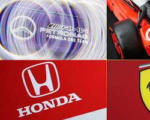
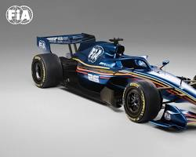
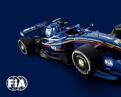

MotorUnidades de Potencia
Publicado el 01 de Marzo, 2026
Descubre cómo la F1 alcanzará los 1000 CV con una dependencia eléctrica del 50%.
Análisis de los cambios reglamentarios de la FIA

MotorPublicado el 01 de Marzo, 2026
Descubre cómo la F1 alcanzará los 1000 CV con una dependencia eléctrica del 50%.

AeroPublicado el 03 de Marzo, 2026
Nuevos sistemas de alerones móviles para reducir el drag en recta sin perder carga en curva.
 Combustible
Combustible
Publicado el 05 de Marzo, 2026
A partir de 2026, la F1 abandona los combustibles fósiles. Se utilizarán e-fuels sintéticos que prometen cero emisiones netas de carbono sin perder rendimiento.

Publicado el 07 de Marzo, 2026
El sustituto del DRS: un sistema de potencia extra que obligará a los pilotos a gestionar su batería como nunca antes.